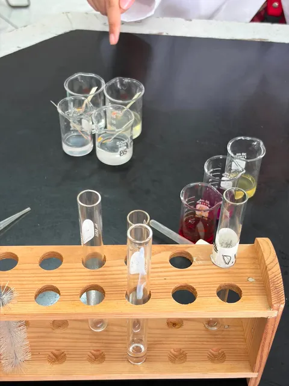
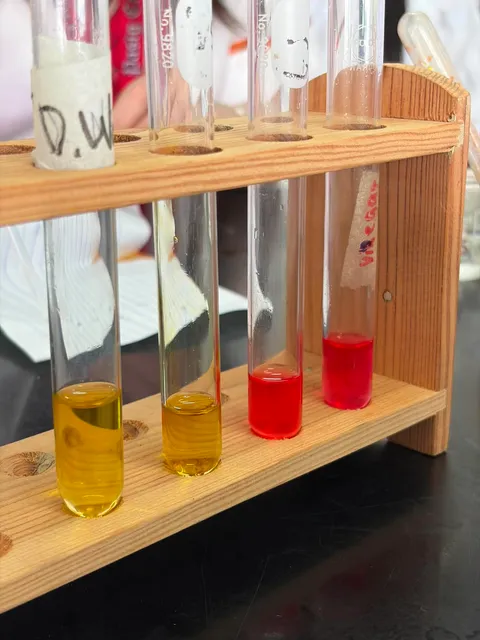
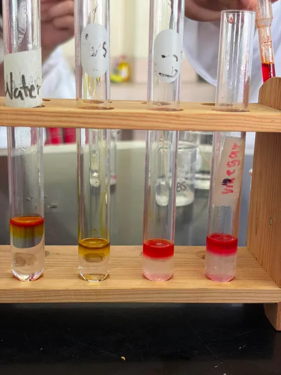
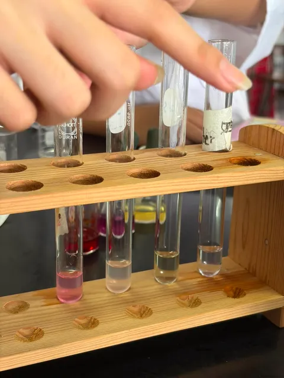

This study explores environmentally friendly alternatives to commercial pH indicators by utilizing agricultural products. Through experimentation, the researchers compared natural indicators with the standard universal indicator to determine their effectiveness in identifying acidic, neutral, and basic household substances.
Natural pH indicators obtained from agricultural products are inexpensive, environmentally friendly, and safe alternatives to commercial indicators. In this experiment, the researchers investigated the effectiveness of these natural indicators by comparing their color changes with those produced by the universal indicator. The experiment demonstrates how chemistry can be applied using readily available materials while promoting sustainability and environmental awareness.
Acids are substances that release hydrogen ions (H⁺) in water. They usually have a sour taste and a pH value below 7. Examples include vinegar and lemon juice.
Bases release hydroxide ions (OH⁻) in water. They usually have a bitter taste, feel slippery, and have a pH value above 7. Baking soda and soap are examples.
The pH scale ranges from 0 to 14. A value below 7 is acidic, 7 is neutral, and above 7 is basic or alkaline.
Indicators are substances that change color depending on the acidity or basicity of a solution. Natural indicators are extracted from plants while universal indicators are laboratory-made mixtures.
The researchers predict that each aqueous solution will produce distinct color changes when mixed with the indicators due to each liquid having a pH level that reacts chemically with the pigments in the red cabbage, turmeric, and universal indicator.
Extract the pigment from agricultural products such as red cabbage or turmeric to create a natural pH indicator.
Collect different household substances such as vinegar, water, baking soda solution, bleach, and detergent.
Place each sample into a clean container and add a few drops of both the natural indicator and the universal indicator.
Carefully observe and record the color changes produced by each indicator.
Analyze the effectiveness of the natural indicator relative to the universal indicator in identifying acidic, neutral, and basic substances.
| Household Substance | Observed Color | Classification |
|---|---|---|
| Vinegar | Pink / Red | Acidic |
| Distilled Water | Green | Neutral |
| Baking Soda | Blue | Basic |
| Bleach | Yellow | Strong Base |
The natural indicators produced color changes comparable to the universal indicator, demonstrating their effectiveness in distinguishing acidic, neutral, and basic solutions.
The universal indicator is effective because it is not a single chemical substance. Instead, it is a carefully blended mixture of different pH indicators that respond to various pH levels by producing a wide range of colors.
Hydrogen ions (H⁺) and hydroxide ions (OH⁻) shift the chemical equilibrium of indicator molecules. This causes the indicator to change color depending on the acidity or basicity of the solution.
For laboratory experiments, the universal indicator is recommended because it provides more accurate and consistent results. However, red cabbage and turmeric are practical alternatives because they are inexpensive, readily available, and environmentally friendly.
Natural indicators can be used to identify acidic and basic household substances. For example, bleach produces a yellow color while baking soda commonly produces a blue or green color.
This experiment demonstrated that agricultural products can successfully function as natural pH indicators. Although the universal indicator provides more accurate and consistent results, natural indicators remain effective for classroom activities and simple household testing. They are inexpensive, eco-friendly, safe, and promote sustainable scientific practices.
Brown, T. L., LeMay, H. E., Bursten, B. E., Murphy, C. J., Woodward, P. M., & Stoltzfus, M. W. (2020). Chemistry: The Central Science (15th ed.). Pearson.
OpenStax. (2019). Chemistry 2e. Rice University.
American Chemical Society. (2022). Natural Acid–Base Indicators.




Aevril Santos
Maria Sofia Castaneda
Ludwig Manalo
Matthew Aramburo
Simoun Planta
Shaina Del Mundo
Mr. Mahinay and Ms. Macalindong
Thank you for your guidance and support throughout this experiment.